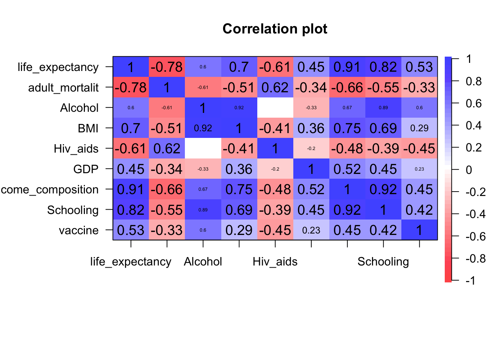
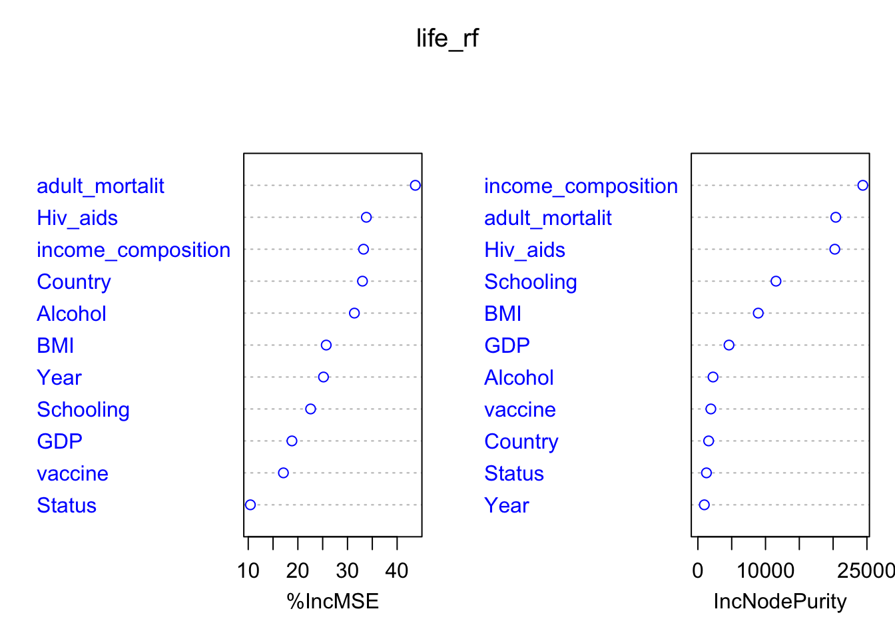

The dataset for this project is life expeactancy data set. It contains the health factors and economic data for 193 countries from the year 2000 to 2015. What’s more, the health factor data is collected from the World Health Organization (WHO) while the economic data is from the United Nation website. Life expectancy data contains 2938 rows, and each row is about the life expectancy related information for a country in a specific year. The data set has 22 columns, including the immunization, mortality, economy and society related information. Specifically, Life expectancy data includes variables “Country”, “Year”, “Status”, “Life expectancy”, “GDP”, “Adult Mortality”, “BMI”, “Schooling”, “Hepatitis B”, “Alcohol” and so on. There are a total 2938 rows.
The question that I am going to answer based on this dataset is as follows: For the given life expectancy related variables, which variables greatly affect the life expectancy? How do those factors affect life expectancy
By knowing the above question, we may change the situation of the specific variables to improve the life expectancy of a person/ country, and we can use the variables to generate an effective model to predict the life expectancy by given information.
From the above graph, the life expectancy increases as GDP increases, but the life_expectancy stays still when GDP reaches a certain level. In addition, As alcohol/BMI/vaccine increases, the life expectancy increases, but the range of life expectancy for alcohol/BMI/vaccine level are large. It is obvious that the life_expectancy increases as schooling year increase, and developed countries has higher schooling years, alcohol level and BMI level. Moreover, there is a strong linear relationship between adult_mortality and life expectancy. As the adult mortality increases, the life expectancy decreases.
From the above graph, as the income composition of resources increases, the life expectancy increases. The size of the point in the above graph shows the Hiv_aids of the data.
As we can see from the above, many countries has life expectancy stay still or increases during 2000 to 2015. However, for some countries, the life expectancy may change a lot for a specific year. For example, the life expectancy of Halti in 2009 and 2011 is around 62, and the 2010 is 36.3, and the 2010 Haiti earthquake is the main reason causing the low life expectancy.

As shown from the above graph, income composition, Schooling, adult_mortality, BMI, Hiv_aids, vaccine has the correlation value higher than 0.5 with life expectancy. Also, the correlation between Schooling and income composition is 0.92, which is very higher. The correlation between GDP and income_composition/Schooling is 0.74/0.68. Furthermore, The correlation between adult_mortality and BMI/Hiv_aids/income_composition, Alcohol and income_composition/Schooling are all around 0.5-0.65.
 In summary, the variables that greatly affect life expectancy including income composition, Schooling, adult_mortality, BMI, Hiv_aids and vaccine. The MSE for regression tree model with cp=0.002 is 9.972, and the MSE for bagging model is 3.6989. In addition, the MSE for random forest is 3.39. Since Random Forest has the lowest MSE, I choose it to be the desired model to predict life expectancy.
Copyright © 2022, Meredith Franklin.